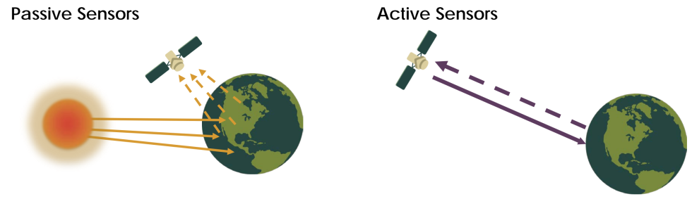
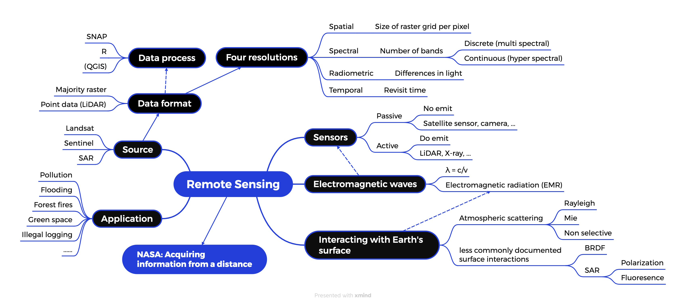
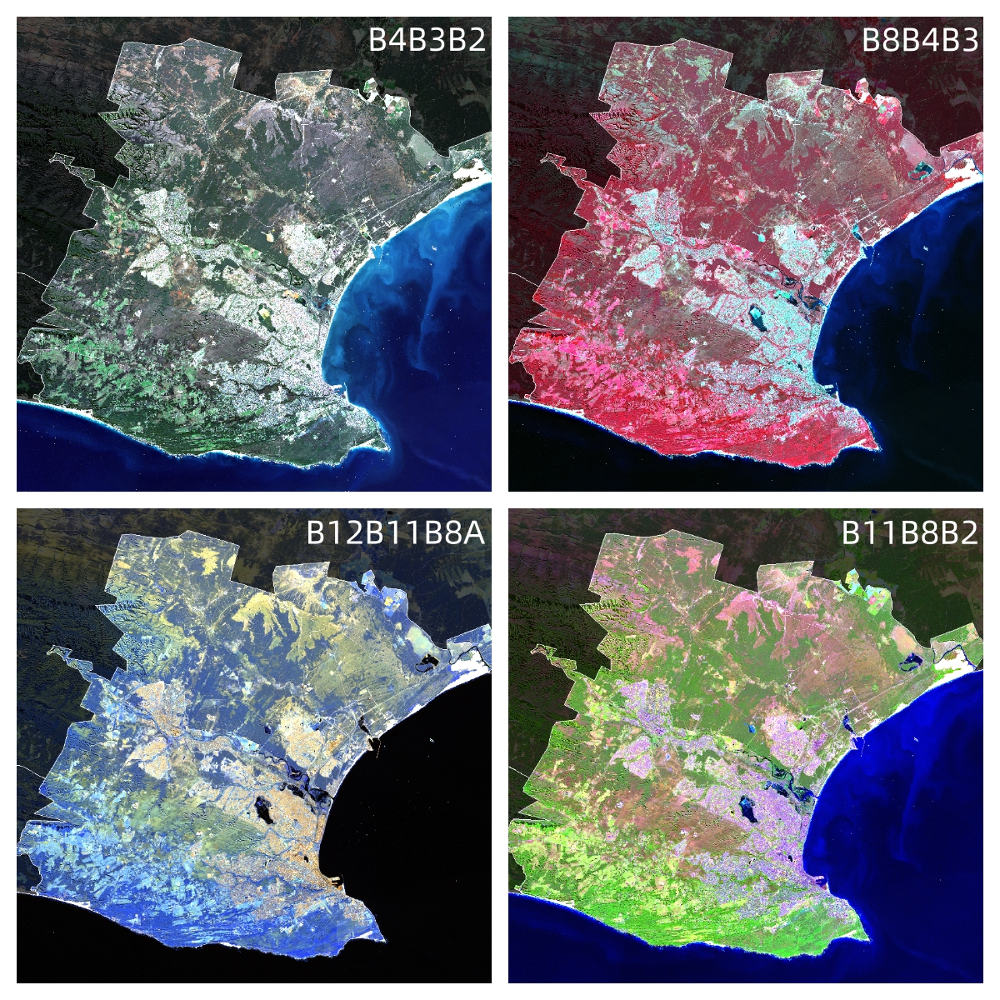

1 Week 1
1.1 Summary
The first week’s lecture provided a general introduction to the fundamentals of remote sensing. In a nutshell, remote sensing refers to the use of sensors mounted on remote platforms to acquire and record information from a distance.
- This week’s lecture provided insights into two different types of sensors: active and passive sensors. The former actively emits electromagnetic waves, consumes more energy, and has penetrating capabilities, allowing it to operate around the clock. The latter, on the other hand, utilizes energy without emitting anything and is relatively less costly compared to active sensors; however, it is sensitive to climatic conditions.

Additionally, I gained an understanding of the principles of electromagnetic wave and radiation propagation, along with related physical phenomena, such as atmospheric scattering.
Typically, remote sensing data is in raster format. However, the data format also depends on the type of sensor, such as LiDAR point cloud data.
There are four common types of remote sensing resolutions: Spatial, Spectral, Radiometric, and Temporal. Different resolutions have their specific application scenarios.
The image below is a mind map that I created using Xmind. It summarises this week’s content in the form of keywords, facilitating my ability to associate and review the material.

This week’s practical taught me how to download and process Sentinel and Landsat data. Using SNAP for data preprocessing and R for data analysis allowed me to explore Landsat and Sentinel data and understand spectral signatures. For this practical, I chose the city of Port Elizabeth in South Africa, a port city with diverse geographical features. The most interesting part for me was selecting different band combinations to create colour composites. I chose Natural Colour (B4, B3, B2), Colour Infrared (B8, B4, B3), Atmospheric Penetration Composite (B12, B11, B8A), and Agriculture Band Combinations (B11, B8, B2) (see below). Through Colour Infrared and Agriculture Band Combinations, we can more intuitively assess the health of vegetation and crops. In Colour Infrared, healthy vegetation typically appears bright red, while in Agriculture Band Combinations, it appears bright green. I discovered that the vegetation along the southern coast of Port Elizabeth is very healthy, whereas the vegetation in the northeast is relatively less so.

1.2 Applications
Navalgund, Jayaraman, and Roy (2007) point out that remote sensing data application fields are vast, encompassing forestry, agriculture, marine resources, disaster prediction, and more. This technology, primarily focused on identifying features on the Earth’s surface, is particularly well-suited for environmental protection and climate forecasting (natural resources).
A typical application scenario is the prediction and prevention of forest fires. Gibson et al. (2020) used Sentinel-2 imagery and random forest machine learning methods to accurately map the severity of fires in southeastern Australia. Sentinel-2 has a high update frequency (short revisit time) and 13 spectral bands (two more than Landsat 8-9). More spectral bands and shorter revisit times make Sentinel-2 more suitable for preventing forest fires than Landsat 8-9.
However, Landsat 8-9 has a Thermal Infrared Sensor, which can effectively capture the land surface temperature, making Landsat 8-9 more suitable for addressing urban heat island effects. Kaplan, Avdan, and Avdan (2018) used Landsat 8 Satellite Data to analyze the urban heat island in Skopje, Macedonia.
These pieces of literature highlight the importance of remote sensing technology and tell me that different sensors have advantages and disadvantages. We must rationally use them and apply them in the most suitable fields.
1.3 Reflection
I wasn’t very familiar with this field before. However, through this week’s study, I’ve grasped the basics of remote sensing and realized its significance. Remote sensing allows people to see the Earth’s surface clearly, and different sensors and data formats have specific applications.
Compared to the overall difficulty of CASA0005, getting started with the first practical of this course was somewhat challenging. Therefore, I want to emphasize that processing remote sensing data is much harder than expected! It requires a significant amount of time, continuous practice, and adaptation. However, it’s also very interesting. I’m genuinely happy when I’m using SNAP, curiously and tirelessly observing the images.
(Here’s a personal experience using R and SNAP: Compared to SNAP, R can process data more quickly and efficiently as the code is more adaptable, and it integrates well with other libraries, facilitating data analysis and visualization (such as chart making). However constantly working with code can become tedious, and R does not readily provide a dynamic observation and monitoring experience (unless one writes a series of interactive design codes). On the other hand, SNAP boasts many powerful features for an enhanced visual experience, such as drag and zoom, Colour Manipulation, and even World View (where you can drag the Earth!), though its complex layout may need to be more beginner-friendly.
SNAP excels in data preprocessing and provides a solid visual presentation. R, conversely, is better suited for more detailed analysis and visualization of data (like data distribution, trend changes, and comparative analysis).)
I’ve become more curious about the details of remote sensing technology, such as how various indices are calculated. Moreover, while reading the literature, I’ve noticed that in recent years, most remote sensing data has almost always been linked to the term ‘Machine Learning.’ I will keep an eye on the Machine Learning field, and by combining it with the course CASA0006 this term, I should gain more insights.